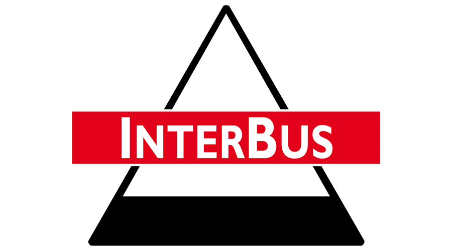
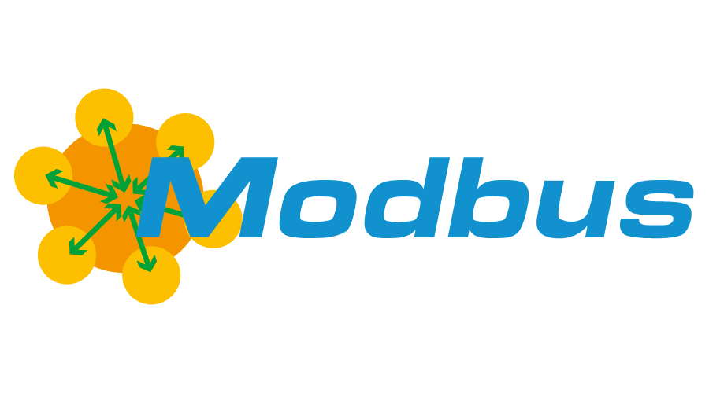
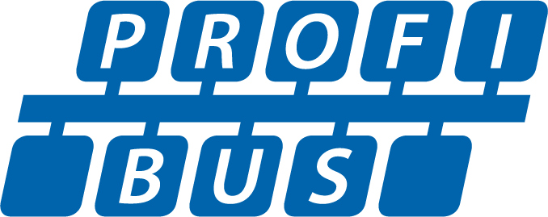
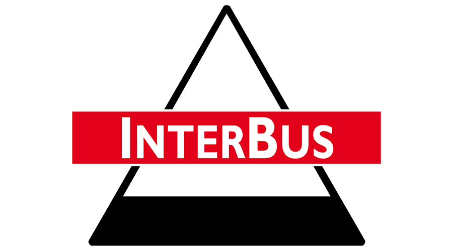
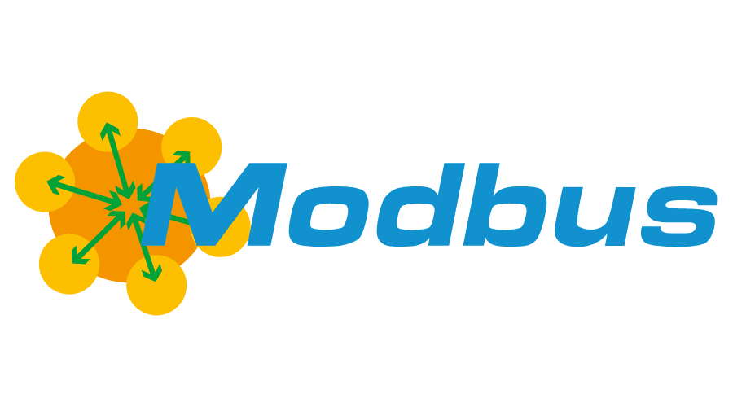
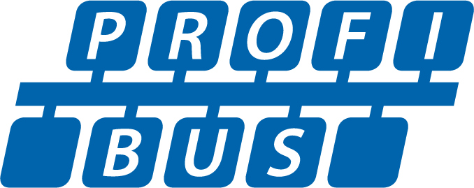

Réseaux industriels
Voici une usine à Thé, tous les composants sont contrôlés par un controleur

-
Le PLC (boitier de commande), gère les capteurs (actionneurs) et les moteurs.
-
Par la suite on a connecté c'est boitier de commande à un poste de supervision (SCADA) pour gérer plusieurs systèmes industriels à distances.
-
Un système de contrôle SCADA permet de recevoir des données depuis les boitier de commande, mais aussi les contrôler ! En piratant le PC de supervision, on peut contrôler l'ensemble des réseaux industriels.
-
Tous ces composants ont des firmware, très peu mis à jour. => STUXNET
Machine outil (pilotage)(machine autonome)
- Bus capteur : ASI, Seriplex
- Bus actionneur : interbus
- Bus de terrain (device bus): Modbus, interbus-S, profibus, device net
   
  
Machine (pilotage et/ou process) => machine discute avec PLC ou SCADA
- Bus fieldbus (bus locaux), Flipway, profibus, FMS
pilotage des processus (SCADA)
- Ethernet, MMS